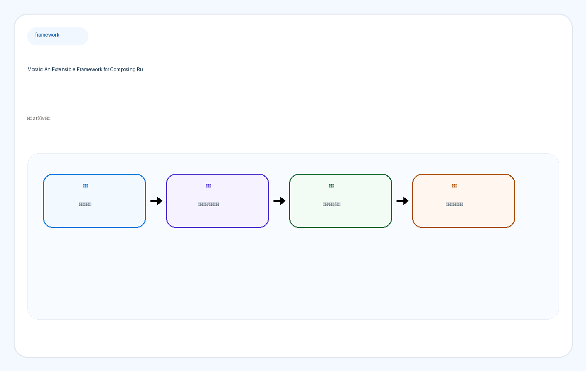

arXiv 每日摘要
归档运行：2026-04-16 05:19:34
arXiv 每日摘要
arxiv-daily-autonomy-robotics-vlm-vla
聚焦自动驾驶、机械臂 / 操控、VLA 与 VLM。首页按手机优先设计：先看总览，再看词云和主题卡片，最后展开具体论文。
Job ID054d56957dbb
Run Time2026-04-16 05:19:34
Schedule0 0 * * *
本周论文20
平均实现概率71%
开源 / 可部署1 / 10
快速筛选
点词云、点主题，手机上直接筛选今天最值得重点看的 3 篇
编辑优先级1
1. **Mosaic: An Extensible Framework for Composing Rule-Based and Learned Motion Planners** —— 自动驾驶里最实用：有安全、可解释性、闭环基准和代码。
2
2. **HiVLA: A Visual-Grounded-Centric Hierarchical Embodied Manipulation System** —— 分层 VLM+动作专家的路线很清晰，且有真实世界结果。
3
3. **Grounded World Model for Semantically Generalizable Planning** —— 语义泛化最强的一篇，VLA / world model / MPC 三者结合得最紧。
最近 7 天主题词云
2026-04-16 — 2026-04-17 · 20 篇 · 373 个词词云图可视化最近 7 天词频
![最近 7 天主题词云]()
这是一张真正生成出来的主题词云图。下面的词条仍然可以点击筛选论文，图和交互同时保留。
窗口长度2026-04-16 — 2026-04-17
累计论文20
高频词数量18
平均实现概率71%
开源 / 可部署1 / 10
周判断偏研究型、择优看
阅读框架图
先看流程，再看论文细节解读流程从输入到判断
![论文阅读框架图]()
这张框架图把每日阅读拆成四步：输入、理解、判断、输出。它不是论文原始结构图，而是你浏览这份日报时的阅读导航。
整体判断
今日总评今天这批论文里，真正“方法强、可落地”的主线是：自动驾驶里的可解释组合规划、操控里的分层 VLA、以及把语义对齐引入 world model / MPC 的规划路线；VLM 侧更多是奖励设计和 benchmark，适合做实验和补齐评测，不太像直接上生产的系统。
自动驾驶
3 篇
通过 arbitration graphs 把轨迹生成与验证/评分解耦，避免重新训练；在 nuPlan 和 interPlan 上都明显优于单独的规则或学习规划器。

实现概率 72%
开源：是
可部署：是

摘要总结通过 arbitration graphs 把轨迹生成与验证/评分解耦，避免重新训练；在 nuPlan 和 interPlan 上都明显优于单独的规则或学习规划器。
开源判断是
部署判断是
实现概率72% —— 结构清晰、评测扎实，而且作者明确给出代码。
mosaicextensibleframeworkcomposingrule-basedlearnedmotionplannersMosaicExtensibleFrameworkComposingRule-Based
提出 Sequential Navigation Guidance（SNG）与 SNG-QA 数据集，并构造 SNG-VLA 融合局部规划和全局导航；摘要称在精确建模导航信息后取得 SOTA。
实现概率 60%
开源：不确定
可部署：不确定
摘要总结提出 Sequential Navigation Guidance（SNG）与 SNG-QA 数据集，并构造 SNG-VLA 融合局部规划和全局导航；摘要称在精确建模导航信息后取得 SOTA。
开源判断不确定
部署判断不确定
实现概率60% —— 思路明确，但是否能稳定落地仍取决于导航表示和数据扩展。
unveilingsurprisingefficacynavigationunderstandingend-to-endautonomousdrivingUnveilingSurprisingEfficacyNavigationUnderstanding
用 DDPG 在带禁区的路径规划中学习安全动作序列，并与 pseudo-spectral 最优控制比较；结果显示 RL 更快，但可行域与最优性都还有限。
实现概率 48%
开源：不确定
可部署：不确定
摘要总结用 DDPG 在带禁区的路径规划中学习安全动作序列，并与 pseudo-spectral 最优控制比较；结果显示 RL 更快，但可行域与最优性都还有限。
开源判断不确定
部署判断不确定
实现概率48% —— 代码思路不复杂，但问题设定偏简化，离真实自动驾驶还有距离。
comparisonreinforcementlearningoptimalcontrolpathplanning自动驾驶ComparisonReinforcementLearningOptimalControl
机械臂 / 操控
3 篇
高层 VLM 负责任务分解和视觉定位，低层用 flow-matching DiT 做动作生成；作者强调在模拟和真实世界都优于端到端基线，尤其适合长程组合技能和小目标操作。
实现概率 70%
开源：不确定
可部署：是
摘要总结高层 VLM 负责任务分解和视觉定位，低层用 flow-matching DiT 做动作生成；作者强调在模拟和真实世界都优于端到端基线，尤其适合长程组合技能和小目标操作。
开源判断不确定
部署判断是
实现概率70% —— 分层设计很顺手，且有真实世界结果，复现价值高。
hivlavisual-grounded-centrichierarchicalembodiedmanipulation机械臂操控VLAHiVLAVisual-Grounded-CentricHierarchicalEmbodiedManipulation
结合 RL 稳定控制器、VR 远程操作数据采集和带 touch dreaming 的多模态 Transformer；在 5 个接触密集任务上，平均成功率相对强基线提升 90.9%。
实现概率 74%
开源：不确定
可部署：是
摘要总结结合 RL 稳定控制器、VR 远程操作数据采集和带 touch dreaming 的多模态 Transformer；在 5 个接触密集任务上，平均成功率相对强基线提升 90.9%。
开源判断不确定
部署判断是
实现概率74% —— 真实世界任务清楚，组件也比较标准，工程路线很明确。
learningversatilehumanoidmanipulationtouchdreaming机械臂操控LearningVersatileHumanoidManipulationTouch
高层 VLM 负责结构化任务记忆、目标分解和失败校正，低层 VLA 负责 diffusion 式动作执行；在 RMBench 上平均成功率 32.4%，强于最强基线的 9.8%。
实现概率 66%
开源：不确定
可部署：不确定
摘要总结高层 VLM 负责结构化任务记忆、目标分解和失败校正，低层 VLA 负责 diffusion 式动作执行；在 RMBench 上平均成功率 32.4%，强于最强基线的 9.8%。
开源判断不确定
部署判断不确定
实现概率66% —— 体系化很强，但闭环稳定性和记忆模块的工程细节会决定上限。
goal2skilllong-horizonmanipulationadaptiveplanningreflection机械臂操控Goal2SkillLong-HorizonManipulationAdaptivePlanning
VLA
2 篇
先学 grounded world model，再用与任务指令相似度来给动作轨迹打分；在 WISER 基准上成功率 87%，显著高于传统 VLA 的平均 22%。
实现概率 78%
开源：不确定
可部署：不确定
摘要总结先学 grounded world model，再用与任务指令相似度来给动作轨迹打分；在 WISER 基准上成功率 87%，显著高于传统 VLA 的平均 22%。
开源判断不确定
部署判断不确定
实现概率78% —— 方法链条完整，性能也很强，属于今天最像“能直接抄”的路线之一。
groundedworldsemanticallygeneralizableplanningVLA世界模型规划GroundedWorldSemanticallyGeneralizablePlanning
在稀疏或不完美奖励下，把 VLA 正则项加到 RL 训练里，以改善探索和信用分配；目标是长程操控中的闭环控制。
实现概率 63%
开源：不确定
可部署：不确定
摘要总结在稀疏或不完美奖励下，把 VLA 正则项加到 RL 训练里，以改善探索和信用分配；目标是长程操控中的闭环控制。
开源判断不确定
部署判断不确定
实现概率63% —— 训练技巧型方法，复现门槛不高，但收益是否稳定要看任务和奖励设计。
jump-startreinforcementlearningvision-language-actionregularizationVLA强化学习操控Jump-StartReinforcementLearningVision-Language-ActionRegularization
VLM
2 篇
对 GRPO 训练中的四类奖励做系统消融：格式、准确率、综合 rubric、注意力奖励；结果显示奖励设计不会线性变好，且不同奖励会诱导不同推理偏好。
实现概率 84%
开源：不确定
可部署：不确定
摘要总结对 GRPO 训练中的四类奖励做系统消融：格式、准确率、综合 rubric、注意力奖励；结果显示奖励设计不会线性变好，且不同奖励会诱导不同推理偏好。
开源判断不确定
部署判断不确定
实现概率84% —— 依赖现成模型和明确奖励定义，最容易复现，也最容易改造成自己的实验。
rewarddesignphysicalreasoningvision-languagemodelsVLM奖励设计RewardDesignPhysicalReasoningVision-Language
AVID: A Benchmark for Omni-Modal Audio-Visual Inconsistency Understanding via Agent-Driven Construction
构建了 11.2K 长视频、39.4K 冲突事件的大规模基准 AVID，并给出 AVID-Qwen 基线；摘要显示当前 omni-modal 模型在时序定位和推理上仍有明显短板。
实现概率 52%
开源：不确定
可部署：不确定
AVID: A Benchmark for Omni-Modal Audio-Visual Inconsistency Understanding via Agent-Driven Construction
摘要总结构建了 11.2K 长视频、39.4K 冲突事件的大规模基准 AVID，并给出 AVID-Qwen 基线；摘要显示当前 omni-modal 模型在时序定位和推理上仍有明显短板。
开源判断不确定
部署判断不确定
实现概率52% —— 做基准和评测体系相对直接，但它更像研究基础设施，不是即插即用的应用方案。
avidomni-modalaudio-visualinconsistencyunderstandingagent-drivenconstructionVLMAVIDOmni-ModalAudio-VisualInconsistencyUnderstanding